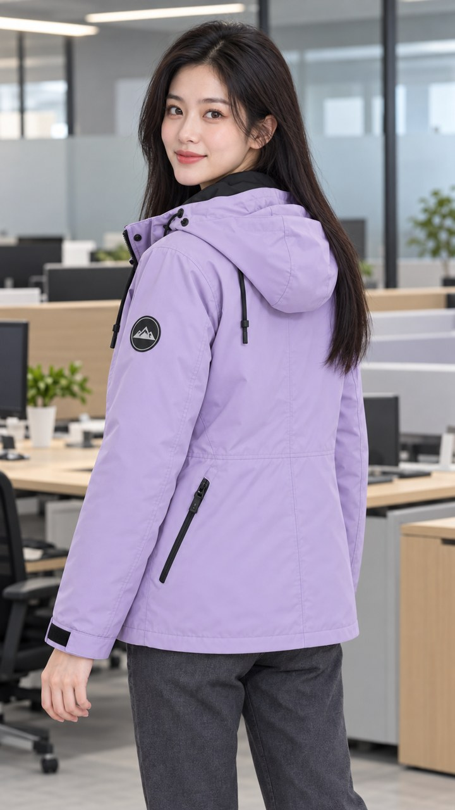
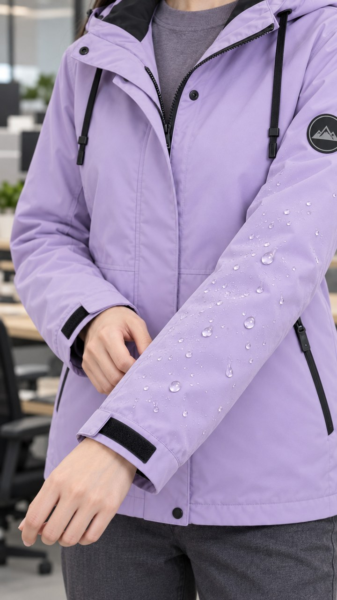
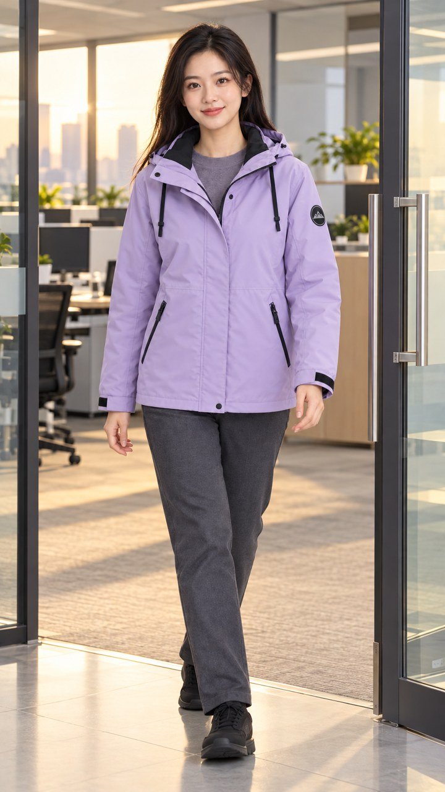

镜头 01 · 0—2秒办公室穿上外套字幕：下班前，穿好这一件口播：下班啦，查看可灵提示词竖屏9:16，写实电商摄影。以所上传首帧为画面起点，锁定林晚LW27/MP01同一张脸、黑色中分过肩直发、真实皮肤与正常身体比例；同一件浅薰衣草紫及胯连帽冲锋棉服，黑内领、双黑帽绳、前中拉链按扣门襟、双斜插拉链口袋、黑袖口调节贴、左上臂无字圆形山峰章。办公室中性柔光，紫色稳定。首帧：中景，站在浅木工位旁，外套已穿好、门襟微开，双手在衣襟两侧。运镜与动作：平视中景，镜头缓慢前推约10厘米。她只轻轻合拢衣襟并停住，视线从衣襟抬向镜头；不要生成复杂穿袖过程。本段目标剪辑时长2秒，动作平缓单一。负面提示：换脸、年龄变化、脸部闪烁、塑料皮肤、头发穿衣、手指畸形、多余肢体、衣服变色、口袋增减、门襟变形、标志乱码、夸张瘦身、背景扭曲、额外人物、文字、水印。复制本镜提示词
镜头 02 · 2—4秒正面口播字幕：浅紫色 · 通勤搭配口播：浅紫色，真好搭。查看可灵提示词竖屏9:16，写实电商摄影。以所上传首帧为画面起点，锁定林晚LW27/MP01同一张脸、黑色中分过肩直发、真实皮肤与正常身体比例；同一件浅薰衣草紫及胯连帽冲锋棉服，黑内领、双黑帽绳、前中拉链按扣门襟、双斜插拉链口袋、黑袖口调节贴、左上臂无字圆形山峰章。办公室中性柔光，紫色稳定。首帧：正面半身，微笑看镜头，衣服结构清楚。运镜与动作：固定机位，正面半身，只轻微点头一次，嘴部放松；先做无声底片，再用独立批准音轨对口型。本段目标剪辑时长2秒，动作平缓单一。负面提示：换脸、年龄变化、脸部闪烁、塑料皮肤、头发穿衣、手指畸形、多余肢体、衣服变色、口袋增减、门襟变形、标志乱码、夸张瘦身、背景扭曲、额外人物、文字、水印。复制本镜提示词
镜头 03 · 4—6.5秒转身展示字幕：侧背版型 · 利落轮廓口播：侧背面也利落。查看可灵提示词竖屏9:16，写实电商摄影。以所上传首帧为画面起点，锁定林晚LW27/MP01同一张脸、黑色中分过肩直发、真实皮肤与正常身体比例；同一件浅薰衣草紫及胯连帽冲锋棉服，黑内领、双黑帽绳、前中拉链按扣门襟、双斜插拉链口袋、黑袖口调节贴、左上臂无字圆形山峰章。办公室中性柔光，紫色稳定。首帧：办公室侧背三分之二视角，头自然回望，双臂下垂。运镜与动作：平视中景，固定镜头。由首帧侧背姿态向模特自身右侧小幅转动约20度并停住，展示侧背衣摆；头发自然轻摆。不做连续360度。本段目标剪辑时长2.5秒，动作平缓单一。负面提示：换脸、年龄变化、脸部闪烁、塑料皮肤、头发穿衣、手指畸形、多余肢体、衣服变色、口袋增减、门襟变形、标志乱码、夸张瘦身、背景扭曲、额外人物、文字、水印。复制本镜提示词
镜头 04 · 6.5—8.5秒衣摆与袖口细节字幕：袖口 / 衣摆细节口播：细节也看看。查看可灵提示词竖屏9:16，写实电商摄影。以所上传首帧为画面起点，锁定林晚LW27/MP01同一张脸、黑色中分过肩直发、真实皮肤与正常身体比例；同一件浅薰衣草紫及胯连帽冲锋棉服，黑内领、双黑帽绳、前中拉链按扣门襟、双斜插拉链口袋、黑袖口调节贴、左上臂无字圆形山峰章。办公室中性柔光，紫色稳定。首帧：从办公室首帧另存裁切副本，肩以下至胯部，袖口与衣摆居中，保持9:16。运镜与动作：固定近景，轻微推近。她只用一只手轻抚一次衣摆，另一手自然垂放；不拉伸面料、不改变衣长。本段目标剪辑时长2秒，动作平缓单一。负面提示：换脸、年龄变化、脸部闪烁、塑料皮肤、头发穿衣、手指畸形、多余肢体、衣服变色、口袋增减、门襟变形、标志乱码、夸张瘦身、背景扭曲、额外人物、文字、水印。复制本镜提示词请先从办公室图另存9:16衣摆细节裁切。
镜头 05 · 8.5—11.0秒面料水珠特写字幕：水珠效果为AI示意 · 非性能检测口播：水珠效果作示意，查看可灵提示词竖屏9:16，写实电商摄影。以所上传首帧为画面起点，锁定林晚LW27/MP01同一张脸、黑色中分过肩直发、真实皮肤与正常身体比例；同一件浅薰衣草紫及胯连帽冲锋棉服，黑内领、双黑帽绳、前中拉链按扣门襟、双斜插拉链口袋、黑袖口调节贴、左上臂无字圆形山峰章。办公室中性柔光，紫色稳定。首帧：袖面微距，少量已存在的圆润水珠，背景是虚化办公室。运镜与动作：固定微距，微微向下跟随。一颗首帧已有水珠沿浅紫袖面短距离缓慢滑动，其余水珠保持自然；不从杯子倒水，不生成大水流。此为视觉示意，不表现检测实验。本段目标剪辑时长2.5秒，动作平缓单一。负面提示：换脸、年龄变化、脸部闪烁、塑料皮肤、头发穿衣、手指畸形、多余肢体、衣服变色、口袋增减、门襟变形、标志乱码、夸张瘦身、背景扭曲、额外人物、文字、水印。复制本镜提示词
镜头 06 · 11—13秒正面收尾口播字幕：防泼水 / 保暖 / 轻量：以商品资料为准口播：参数记得看详情。查看可灵提示词竖屏9:16，写实电商摄影。以所上传首帧为画面起点，锁定林晚LW27/MP01同一张脸、黑色中分过肩直发、真实皮肤与正常身体比例；同一件浅薰衣草紫及胯连帽冲锋棉服，黑内领、双黑帽绳、前中拉链按扣门襟、双斜插拉链口袋、黑袖口调节贴、左上臂无字圆形山峰章。办公室中性柔光，紫色稳定。首帧：复用正面半身母图，嘴部无遮挡。运镜与动作：固定正面半身，仅自然微笑、轻微点头，手臂不抬起。先做无声底片，批准音轨后再对口型。本段目标剪辑时长2秒，动作平缓单一。负面提示：换脸、年龄变化、脸部闪烁、塑料皮肤、头发穿衣、手指畸形、多余肢体、衣服变色、口袋增减、门襟变形、标志乱码、夸张瘦身、背景扭曲、额外人物、文字、水印。复制本镜提示词
镜头 07 · 13—15秒下班出门字幕：下班，出发。口播：下班，出发。查看可灵提示词竖屏9:16，写实电商摄影。以所上传首帧为画面起点，锁定林晚LW27/MP01同一张脸、黑色中分过肩直发、真实皮肤与正常身体比例；同一件浅薰衣草紫及胯连帽冲锋棉服，黑内领、双黑帽绳、前中拉链按扣门襟、双斜插拉链口袋、黑袖口调节贴、左上臂无字圆形山峰章。办公室中性柔光，紫色稳定。首帧：办公室玻璃门内侧，模特穿同款外套，四分之三侧前全身，门已打开。运镜与动作：平视中远景，镜头缓慢后退。她朝已打开的办公室出口自然走一步，重心平稳，衣摆轻动，最后停住；不穿门、不切换服装。本段目标剪辑时长2秒，动作平缓单一。负面提示：换脸、年龄变化、脸部闪烁、塑料皮肤、头发穿衣、手指畸形、多余肢体、衣服变色、口袋增减、门襟变形、标志乱码、夸张瘦身、背景扭曲、额外人物、文字、水印。复制本镜提示词